生物（Mob）
生物（Mob）是指游戏世界中有生命的、可自主移动的一类实体。术语“Mob”是“Mobile Entity（可移动的实体）”的简写。
生成（Summon）
生物存在是因为多种原因的生成。许多生物会自然地生成，但依赖于光照等级、生物群系以及它们的环境。生物一般以相同种类成群地生成。这些生物总是会在初次区块创建时生成。许多友好生物可以繁殖，除非它们是幼年的。生物一般不会自然生成于上表面不完整的方块、水里及熔岩中，但水生生物可以在水下生成，炽足兽会生成在熔岩表面。刷怪笼是个例外，它可以让生物自然地生成于任何地方（包括空气）。 某些生物（像雪傀儡和凋灵）在生成之前需要玩家“构建”它们。铁傀儡既可自然生成也可由玩家构建或使用刷怪蛋生成。 玩家也可以使用刷怪蛋，或者在允许作弊的情况下，使用/summon命令召唤生物。
行为（Behavior）
生物适用许多非生物实体不具有的游戏机制，包括受击后伤害免疫、状态效果、属性、着火时间、呼吸等。生物死亡时还会产生倒下并冒出烟雾的动画效果。 Minecraft里大多数生物皆有特定的AI（人工智能）系统，拥有不同的行为和力学。如果生物附近有玩家，生物通常会随机游荡，并且通常会避免走到很高的方块而导致摔落。许多生物都有一个先进的寻路系统，使它们经由复杂的路径到达要去的地点。 大多数生物都会察觉到在半径16格方块内的其他生物，但有些可以看得更远。大多数生物可以被16个方块以外的玩家听到。 绝大多数生物的视线无法穿过大多数固体方块，包括半透明方块，如冰、玻璃或玻璃板。在Java版中，除了玩家和监守者以外的所有生物都不会试图在铁轨上行走，除非被其他生物推着。
生物列表
下面列出并依照其性质分类的生物。该列表中的“友好生物”和“敌对生物”类别根据Java版中生物对攻击目标的选择方式进行分类。
玩家 |
玩家是可以控制的生物。作为一种生物，能够影响生物的多种状态和效果也能够影响玩家。 |

|
|
|
玩家（Steve） |
|
友好生物 |
友好生物是不会主动攻击玩家的生物，这些生物不会因难度设置而被清除。 |
无生物AI |
盔甲架是一种不具有生物AI而不会行动的生物，但大多数影响生物的效果会影响盔甲架。 |

|
|
|
盔甲架 （Armor Stand） |
|
无攻击行为，无伤害能力 |
以下生物没有任何造成伤害的能力，其中的许多生物受到伤害时会惊慌逃窜。 （在Java版中，兔子有未使用的近战攻击能力） |

|

|

|

|

|

|

|

|

|
|
悦灵（Allay） |
犰狳（Armadillo） |
蝙蝠 （Bat） |
骆驼（Camel） |
鸡（Chicken） |
鳕鱼 （Cod） |
牛 （Cow） |
驴（Donkey） |
发光鱿鱼（Glow Squid） |

|

|

|

|

|

|

|

|

|
|
马（Horse） |
骡子 （Mule） |
嗅探兽（Sniffer） |
鲑鱼（Salmon） |
绵羊（Sheep） |
骷髅马（Skeleton Horse） |
兔子（Rabbit） |
鹦鹉（Parrot） |
乌龟（Turtle） |

|

|

|

|
|
流浪商人 （Wandering Trader） |
蝌蚪 （Tadpole） |
热带鱼 （Tropical Fish） |
炽足兽 （Strider） |
无攻击行为，有伤害能力 |
以下生物的行为会对包括玩家在内的生物造成伤害，但没有攻击行为。除河豚外，这一类型的生物受到伤害时会惊慌逃窜。 |

|

|

|
||||||
|
山羊 （Goat） |
村民 （Villager） |
河豚 （Pufferfish） |
有攻击行为，不攻击玩家 |
以下生物拥有攻击能力，且会主动攻击生物，但均不会反击攻击它们的生物。这些生物不会主动攻击也不会反击玩家。除美西螈和雪傀儡外，这一类型的生物在受到伤害时仍会惊慌逃窜。 |

|

|

|

|

|
|
美西螈 （Axolotl） |
雪傀儡 （Snow Golem） |
猫 （Cat） |
青蛙 （Frog） |
豹猫 （Ocelot） |
条件敌对 |
以下生物具有攻击能力和敌对条件，且能够在受到侵害时反击加害者，包括玩家。除狐狸外，对这一类型的生物的直接攻击造成伤害会引发反击。除羊驼和行商羊驼外，所有这一类型的生物都会持续攻击目标，直至其死亡、失踪或转化。 除狐狸、铁傀儡、羊驼和行商羊驼外，攻击这些生物会同时激怒其周围的所有同类生物。 由玩家建造的铁傀儡永远不会攻击玩家。 |

|

|

|

|

|

|

|

|
|
|
狼（Wolf） |
海豚（Dolphin） |
北极熊（Polar Bear） |
铁傀儡（Iron Golem） |
羊驼（Llama） |
熊猫（Panda） |
行商羊驼（Trader Llama） |
蜜蜂（Bee） |
敌对生物 |
关于一种被称为“怪物”并使用默认玩家皮肤的已移除生物。敌对生物是危险而具有侵略性的生物。它们会尝试攻击玩家，尝试阻止玩家入睡，在一些情况下也会攻击其他生物或相互攻击。这些生物通常拥有不可忽视的杀伤能力，其中的部分生物也具有受难度影响的额外攻击方式。玩家杀死敌对生物通常有着高于玩家杀死友好生物的经验值奖励。铁傀儡、雪傀儡会主动攻击多数敌对生物。完整启动框架的激活的潮涌核心会攻击除猪灵、猪灵蛮兵和疣猪兽以外的[仅基岩版]所有敌对生物。在Java版中，拥有队伍的潜影贝会主动攻击除恶魂外的任何非同队敌对生物。除潜影贝、猪灵、疣猪兽、猪灵蛮兵[仅基岩版]和末影龙外，敌对生物都会在难度设置为和平时被激怒。进度“怪物猎人”要求玩家杀死任意一个除监守者外的敌对生物，“资深怪物猎人”要求玩家杀死每一种除监守者外的敌对生物各至少一次 以下生物只要注意到玩家，就会对玩家发动攻击，除非它们正在被其他优先目标占用（如反击攻击者）。除恶魂、疣猪兽、潜影贝、猪灵蛮兵[仅基岩版]、史莱姆和岩浆怪[仅Java版]以外，这些生物均会阻止附近的玩家使用床入睡。 |
| 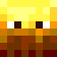 |

|

|
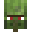 | 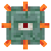 | 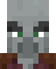 | 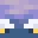 | 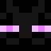 | |
|
烈焰人（Blaze） |
僵尸（Bogged） |
苦力怕（Creeper） |
恶魂（Ghast） |
僵尸村民（Zombie Villager） |
守卫者（Guardian） |
掠夺者（Pillager） |
旋风人（Breeze） |
末影螨（Enderman） |
| 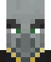 | 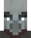 | 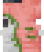 |

|
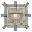 |

|
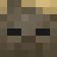 | 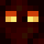 | 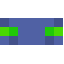 |
|
唤魔者（Evoker） |
卫道士（Vindicator） |
僵尸尤猪兽（Zoglin） |
潜影贝（Shulker） |
远古守卫者（Elder Guardian） |
尤猪兽（Hoglin） |
尸壳（Husk） |
岩浆怪（Magma Cube） |
幻翼（Phantom） |
| 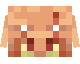 | 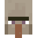 | 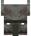 | 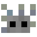 | 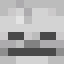 | 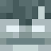 | 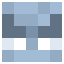 | 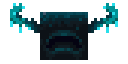 | 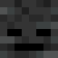 |
|
猪灵蛮兵（Piglin Brute） |
女巫（Witch） |
劫掠兽（Ravager） |
蠹虫（Silverfish） |
骷髅（Skeleton） |
流浪者（Stray） |
恼鬼（Vex） |
监守者（Warden） |
凋灵骷髅（Wither Skeleton） |
条件敌对 |
以下生物可以通过满足特定的条件使其即使注意到玩家也不会发动攻击、部分可以通过满足特定的条件使其不会阻止玩家入睡。 |
| 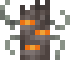 | 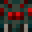 | 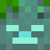 | 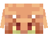 | 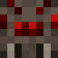 | 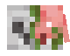 | |
|
嘎枝（Creaking） |
洞穴蜘蛛（Cave Spider） |
溺尸（Drowned） |
末影人（Enderman） |
猪灵（Piglin） |
蜘蛛（Spider） |
僵尸猪灵（Zombified Piglin） |
Boss生物 |
Boss生物是拥有多种攻击手段、坚韧且极具破坏性、始终敌对的敌对生物，为玩家提供更长期、更危险和更大规模的战斗，它们免疫所有状态效果[仅Java版]，并且有与其相关的Boss栏显示其生命值。其中末影龙不会阻止玩家入睡。 |

|
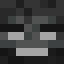 |
|
末影龙（Ender Dragon） |
凋灵（Wither） |